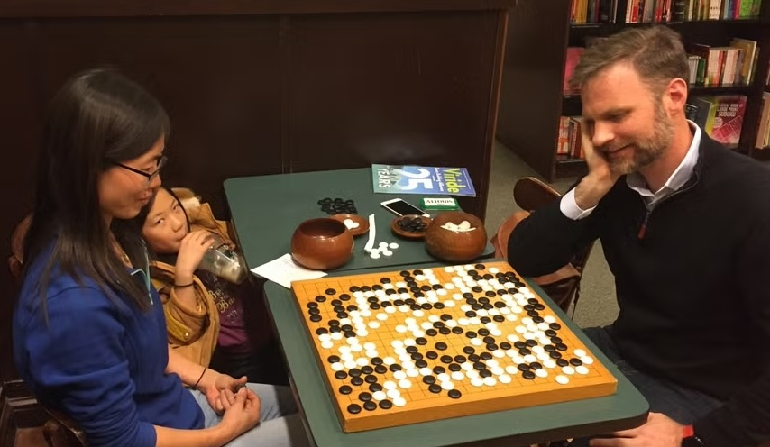

Where to play Go in Nebraska:
GO – It’s more than a game. It’s a game-changer.
We promote Go, not only because it’s fun to play, but because it creates better students and better citizens, leading to better communities.
“When I was young… I wanted to be the world’s best Go
player”
–Bill Gates Speaks: Insights from the World’s Most
Successful Entrepreneur, p. 227.
Go is an ancient easy-to-learn strategy game. It is played with black and white stones on a grid. Simple rules can be learned in a few minutes, even by children as young as four. Handicapping system allows children to play with adults and beginners to play with experts.
Because Go benefits both the individual and the community, the mission of the Nebraska GO Advisory Council is to promote the fun, engaging, fascinating, and educationally-beneficial game of Go in and near the state of Nebraska. Hopefully, our existence and, moreover, our success will be an inspiration to Go promoters beyond Nebraska.
Research done in both the USA and South Korea has proven that playing Go significantly IMPROVES:
Who wouldn’t want to live in a community with students and adults with the above improved abilities?
To promote Go in Nebraska and the surrounding areas by:
Cooperation – To promote our vision, we look forward to working with other passionate, like-minded, individuals and organizations, including, but not limited to, the American Go Foundation (www.agfGo.org). We are not interested in duplicating other organizations’ efforts, but in complementing and enhancing them. Please note that we are always looking for new NGAC members. Ask for an application form (jm9st9@gmail.com).
FREE Go starter sets are available from the American Go Foundation (www.agfGo.org) for any K-12 school, library, YMCA, or community center. Ask about their home-schooling program.
Fun Facts about Go
Nebraska GO Advisory Council members
For more info:
Nebraska GO Advisory Council, Jim Story, Chairperson,
15226
Wycliffe Dr, Suite 36, Omaha, NE 68154
(901) 508-1266, jm9st9@gmail.com
Jim Story, 4/3/2025
Obviously, avid Go players and avid Chess players will have their own opinions. I, personally, have played both games seriously (for example, I’ve played in both Go and Chess tournaments). I am currently the Organizer of the Omaha Go Club and, in 1994, was the President of the Memphis, TN, Chess Club. However, if you’re considering starting either a scholastic Go or Chess club, I suggest a Go club, for the following reasons:
Go uses more of the brain – fMRI (functional Magnetic Resonance Imaging) studies show that Go uses more of the brain than Chess.
Handicapping system – Unlike Chess, Go has a simple handicapping system that allows adults to play with kids and experts to play with beginners, without changing the “feel” or “flavor” of the game. This allows a close exciting game in which both players have an equal chance of winning, whatever their skills levels.
Go is easier to learn - The rules of Go are simpler than the rules of Chess, so it’s easier to learn. This is especially important for younger children. For example, in Go, there is only one “piece”, the stone. Stones are placed on the board one at a time and, once placed, are not moved. By comparison, in Chess, there are five pieces: king, queen, bishop, knight, and rook, plus the pawns. All move differently. And, there are many special rules, like castling, en passant capturing, pawn promotion, and, while pawns move forward, they can only capture diagonally. Go, by comparison, has only two easily-understandable special rules: You cannot make a move that results in either the capture of your own stones, or one that duplicates that previous position.
Eventual greater complexity – Go can be played on different sized boards. The larger the board, the longer the game takes and the more complex is the interaction between different battles on the board. This is what makes it both exciting and challenging. On the tournament board (a grid of 19 x 19, which is five times the size of a Chess board), Go is estimated to be four times as complex as Chess. You can play a quick and simple game of Go on a small board (e.g., on a 9 x 9). But, as Go players advance, they like to play on larger-sized boards, which makes for a more complex and, therefore, more challenging and exciting game.
In conclusion, hopefully, you can start both a Go and a Chess club at your school. However, if you can only start one, I strongly suggest starting a Go club. Lastly, if you don’t start a Go club, then, by all means, please start a Chess club.
Jim Story
Go, written in different East Asian languages and scripts where Go is very popular:
Problems with / additions for this website? Open a GitHub issue.